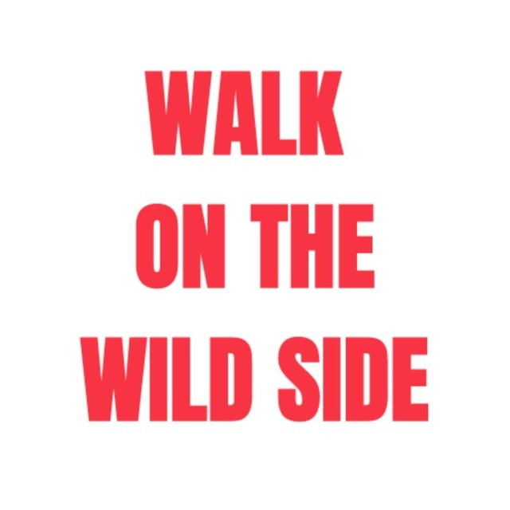
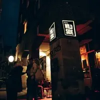
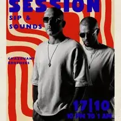
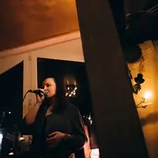
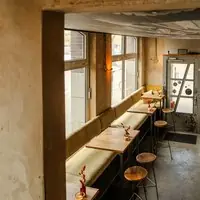

walkonthewildside_hannover
walkonthewildside_hannover
Euer Feed bleibt, wie er ist. Darauf bauen die nächsten 60 Beiträge auf, so wie ihr sie nach und nach postet: Momos Drinks und seine Techniken, die SESSION-Abende, die Decke, Falstaff mit 91 Punkten, der Geburtstag der Bar, Silvester ab mittags, Valentinstag, Feiern auf der Empore.
Kein Foto, das schon auf eurem Profil steht, kommt nochmal vor; nur eure SESSION-Plakate zeigen wir gezielt wieder, «Aus dem Archiv». Mit dem Schalter seht ihr euren Feed heute und mit den nächsten 60; die Nummern zeigen die Reihenfolge zum Posten.


Zeiten
SESSION
Konzerte
Feiern